Jean-François Debord
On dira peintre et professeur.
Tu étais fou de peinture, amoureux des formes du vivant.
{kind=link}
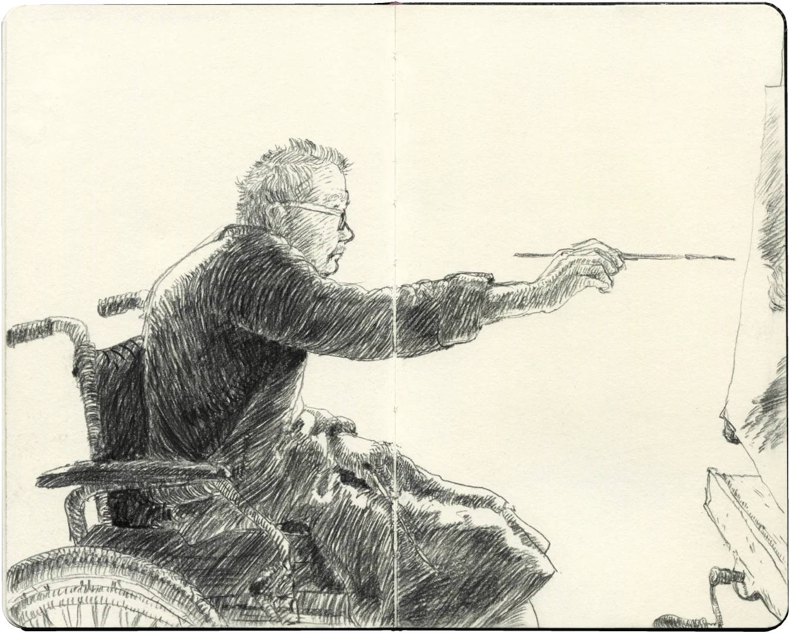
Fou qu'on se soit connus. En 2003, tu prends ta retraite de professeur des Beaux-Arts de Paris ; à trois cent kilomètres de là, je ne sais pas encore lire, mais je dessine déjà. Ado, j'entends un ancien élève parler de toi à la radio. J'ai une vingtaine d'année lorsque ta dernière année d'enseignement, filmée par Cyril de Turckheim, est rendue disponible sur internet. Je me plonge dans tes cours et j'y trouve ce que j'étais venu chercher, en vain, en école d'art : la morphologie, ou le dessin du corps vivant, par la compréhension de son fonctionnement. On dessine mieux ce que l'on comprend, c'est aussi simple que cela. Sans t'avoir jamais rencontré, tu deviens l’un de mes professeurs préférés.
{kind=link}
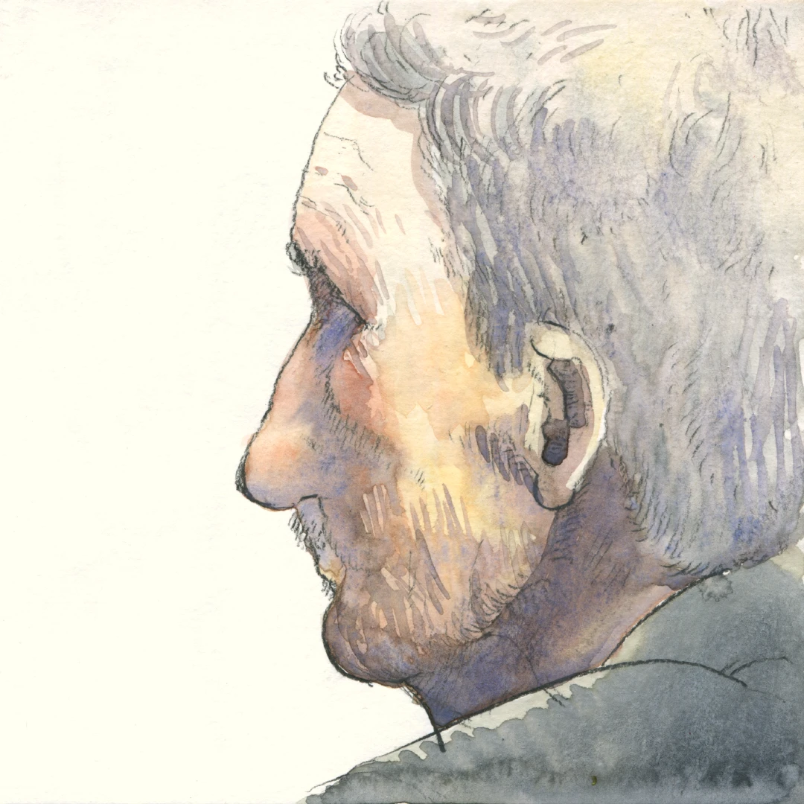
Je ne retiens pas tout, mais ce que je garde me sers beaucoup. C’est ce que je te dis lorsque je te rencontre par hasard à l’Institut des Beaux-Arts pour une exposition d’Emmanuel Guibert. Nous sommes le 9 septembre 2020. Nous portons le masque : je t’ai reconnu à la voix. Tu griffonnes une adresse dans mon carnet et déclare : « écrivez-moi, et dépêchez-vous car je vais bientôt mourir ».
{kind=link}
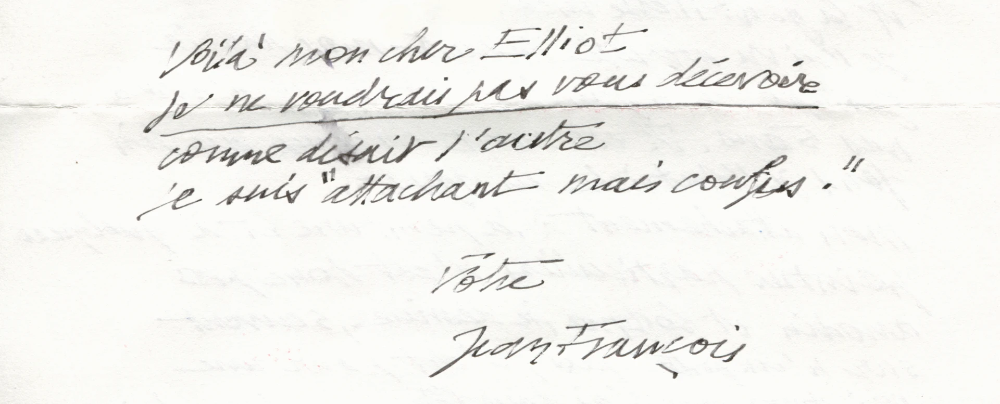
Un matin d'hiver 2021, je prends le train pour aller passer quatre jours seuls avec un inconnu. Plusieurs heures en vidéos, 10 minutes en vrai, une lettre. Je vais voir un professeur. Je découvre un peintre. Je rencontre un ami.
{kind=link}
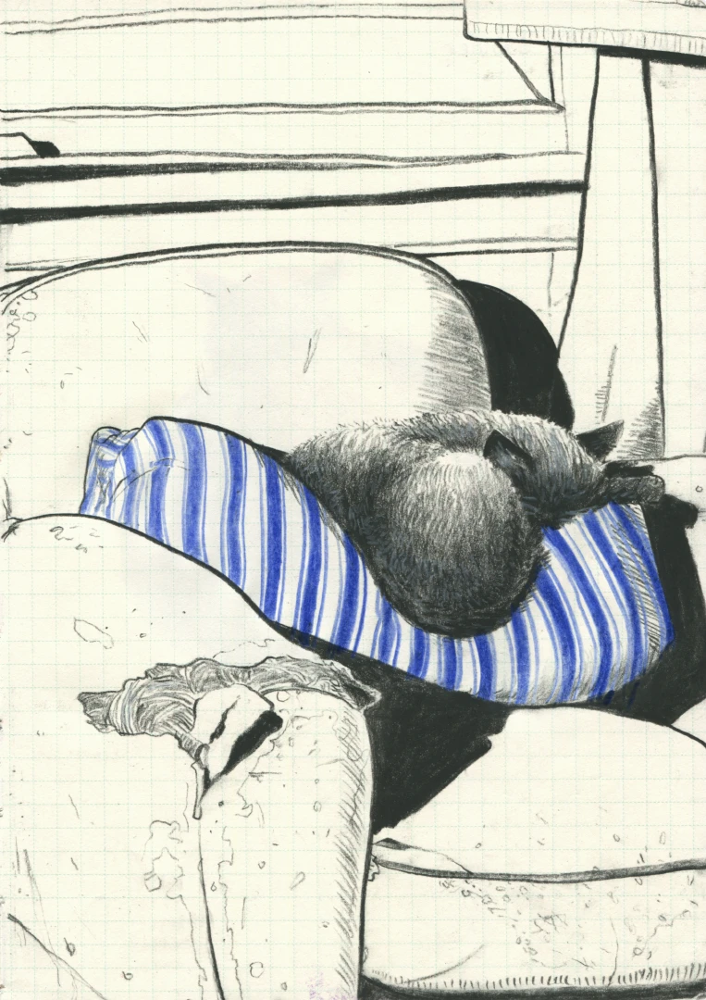
{kind=link}
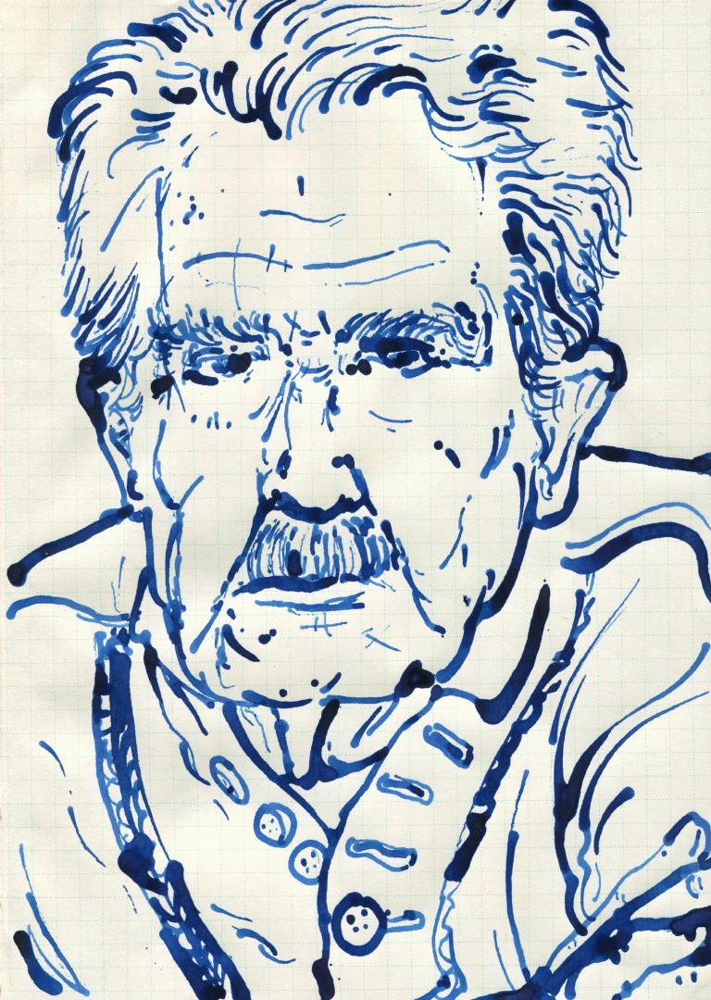
Et comme Jean-François est indissociable de Delphine, c’est deux artistes et deux amis que nous retournerons voir au Pays de Caux avec Blanche.
{kind=link}
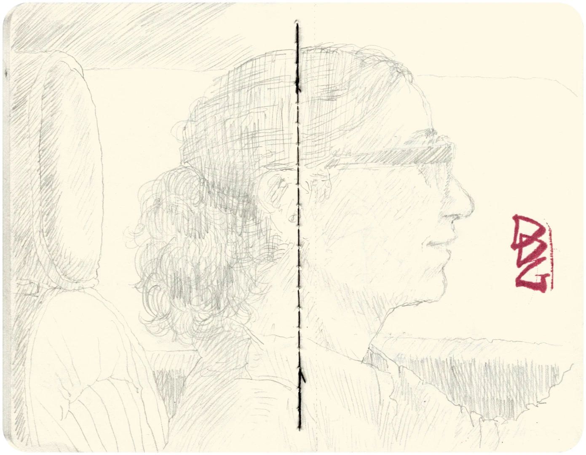
Nous avons partagé les carnets et les peintures. Parlé des heures, et ri beaucoup. Nous avons dessiné ensemble, je t'ai chanté mes chansons. Parfois, c'était dur. Nous avons eu quatre ans.
{kind=link}
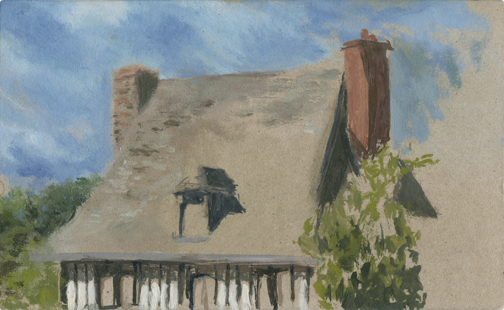
Une semaine avant ta mort, j'avais décidé de me replonger dans tes cours, plus intensément que la première fois : j'avais picoré, je voulais les absorber complètement, les compléter quand j'étais incertain d'un détail, dessiner avec toi chacun des 43 tableaux noirs. Et je l'ai fait. J'ai découvert qu'en fait d'un cours c'était trois cours en un : un cours de morphologie, un cours sur la peinture, un cours sur l'enseignement. Et dans chacun, la vie qui déborde. Je voulais faire ce travail depuis des années, je ne savais pas que tu n'en verrais pas le fruit. Quelle importance ? Nous nous sommes vus tels que nous sommes et nous nous sommes aimés. Tu m’as appris à regarder le corps. Je ne regarderai jamais un tibia ou une omoplate sans toi.
{kind=link}
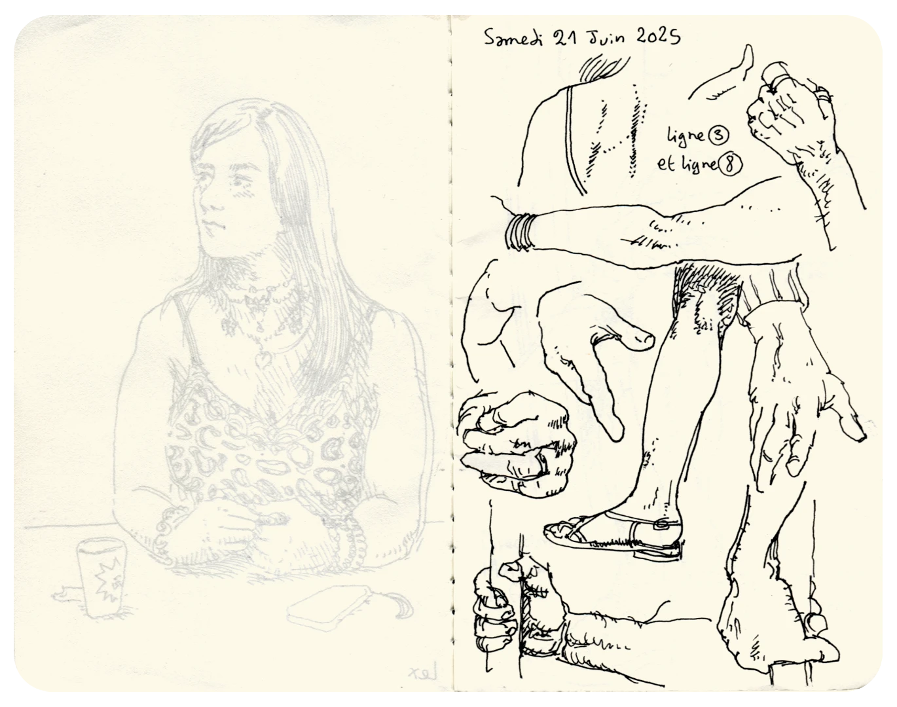
{kind=link}
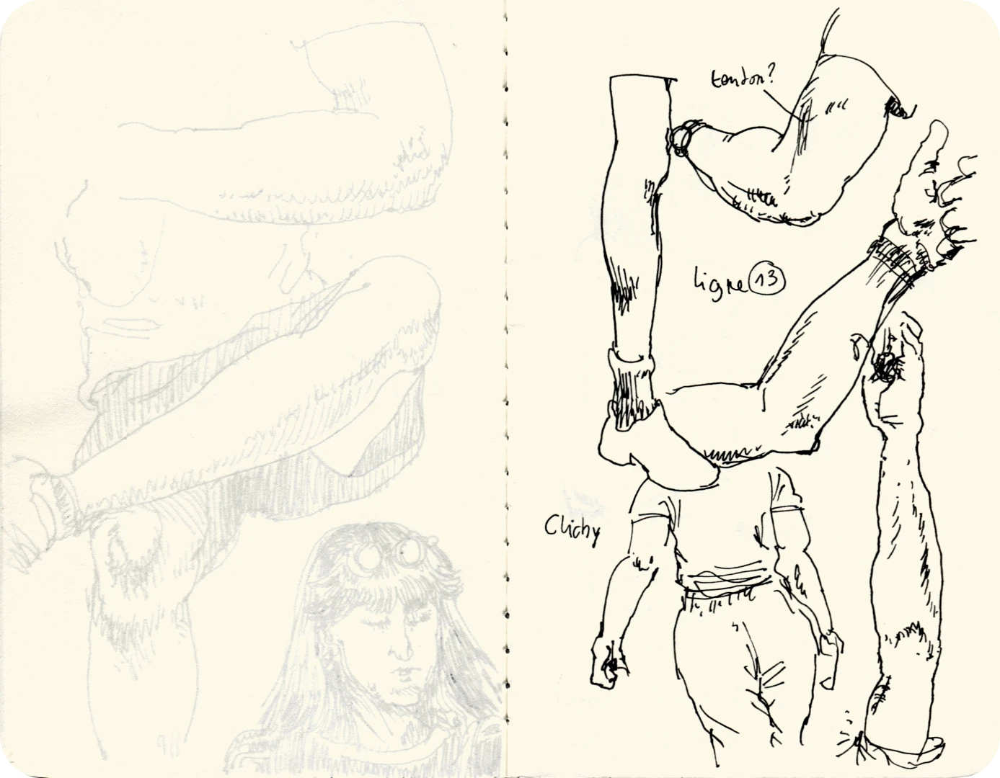
{kind=link}
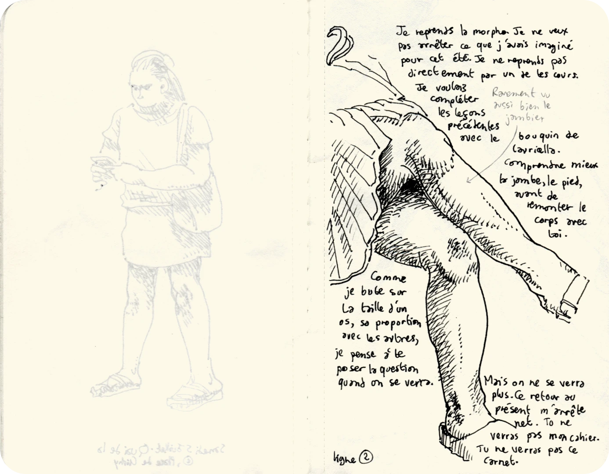
{kind=link}
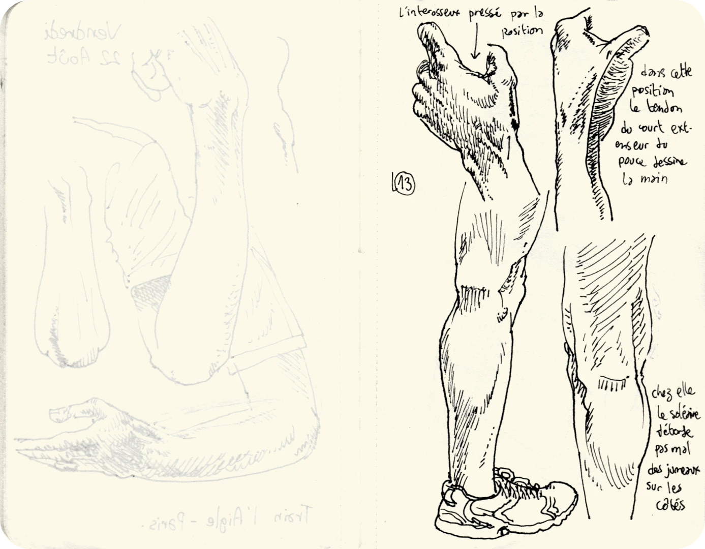
Extraits des carnets tenus durant l'été 2025
Le 29 juin 2025 tu es parti pour toujours. Où que tu sois, où qu’on aille, je pense à toi, retrouvant Cassandre et Le Cœur, Rembrandt et Van Dyck, retrouvant ton père.
1 an plus tôt, je faisais ce rêve : «…Jean-François se lève et part dans l'autre pièce, qui est son atelier. Un dessin rempli mon champs de vision : Jean-François, coupé par le cadre au bassin, le visage de trois-quart vers le fond, se regarde lui-même partir dans une autre pièce. J'ai l'impression que c'est la dernière fois que je vois Jean-François. Je dis : « Je t'aime, Jean-François. » Il se retourne un instant. Je poursuis : « Merci de m'avoir laissé t'aimer. »
{kind=link}
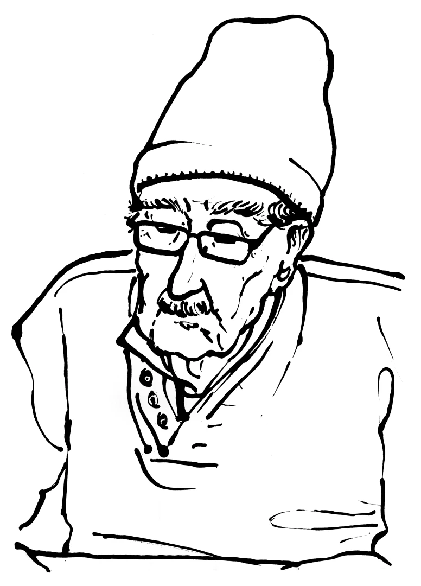
{kind=link}
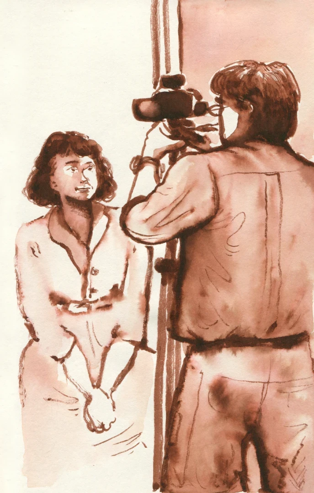
Ailleurs
Des peintures de Jean-François Debord sont visibles sur le site de la Galerie Mercier. C'est également le cas pour Delphine D. Garcia, qui possède aussi un site.
Rémi Lavandier a réalisé les portraits vidéos de Jean-François (2022) et Delphine (2023).
L'enseignement morphologique de Jean-François capté par Cyril de Turckheim est visionnable sur la chaine youtube de l'Université PSL.
Jean-François Debord repose à Veules-les-roses.